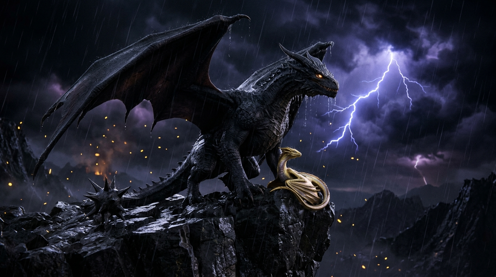
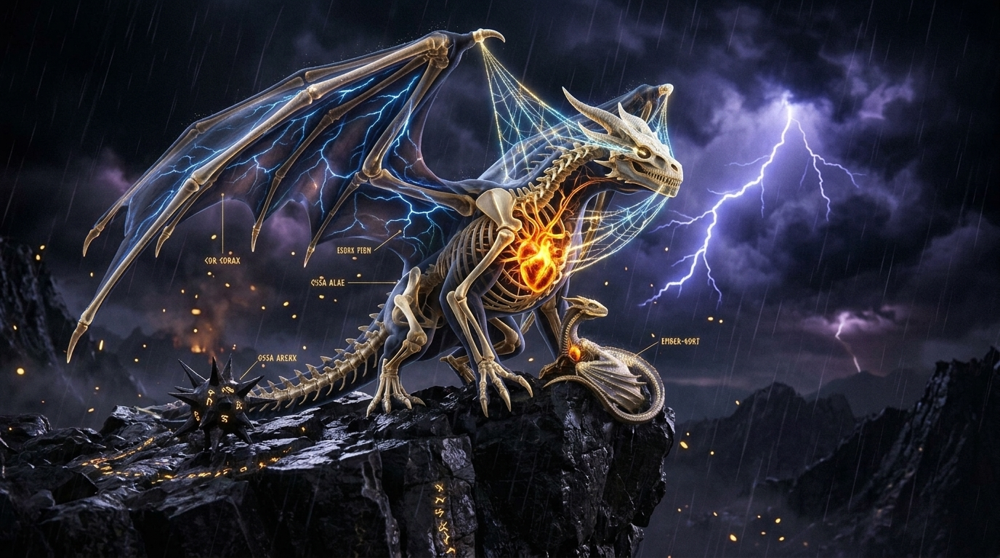

Move your cursor across the storm-swept cliff to part Tairn’s battle-scarred obsidian scales—revealing his four-chambered magma heart, hollow wing struts, and the golden-azure telepathic bond tether.


Inspect the three foundational mysteries of the Empyrean in real-time 3D. Drag to rotate 360° and examine the runic geometry up close.
Defend the Basgiath Wardstone using Second-Sight lightning strikes, or enter the Threshing clearing to find which dragon breed bonds to your soul.
Move your X-Ray Sight over incoming Wyverns to reveal the glowing Red Rune Stone inside their chest—then Click to strike them down with Violet’s lightning!